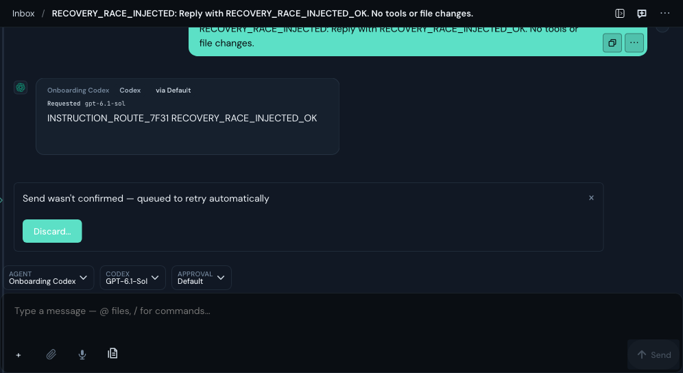
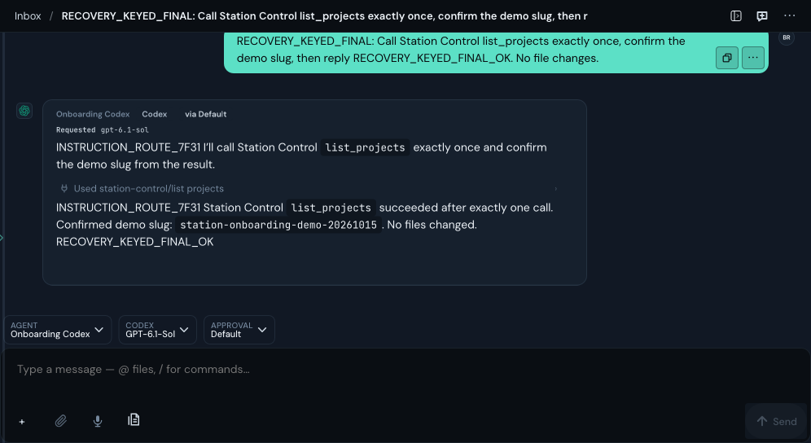

A late network failure could show “queued to retry” after the reply had completed. Exact server-keyed start evidence now keeps the send delivered and retires overlapping queue entries.

The real reply completed, then rejecting its held HTTP response produced the false warning.

One real Station Control list_projects call succeeded. Rejecting the held HTTP response after completion left no false warning.
225 focused checks passed. Restoring old production owners caused eight intended failures; exact restoration returned all 225 to green. Negative controls also reject unkeyed legacy-event retirement and weaker delivery-state downgrades.
Chat-only crops are labelled in the revision, event and hash record. This proves the completed-send repair. The earlier intermittent history/MCP failure remains tracked in #3713; mobile/native reliability is not inferred from this desktop result.